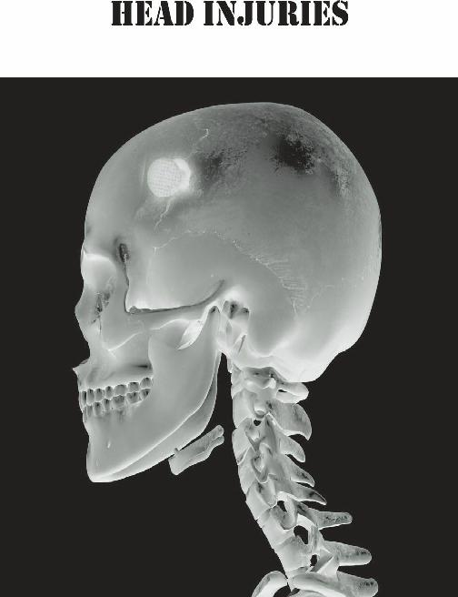
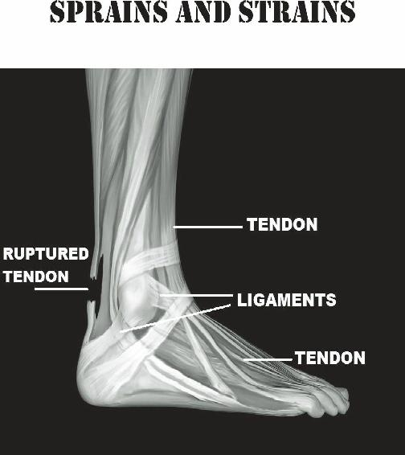
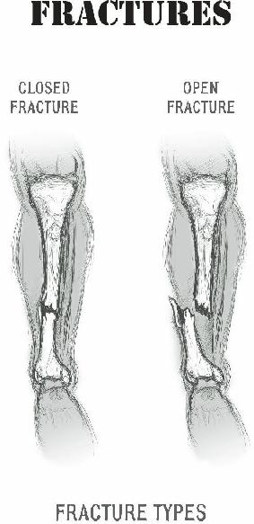
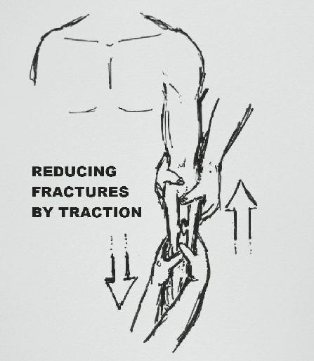
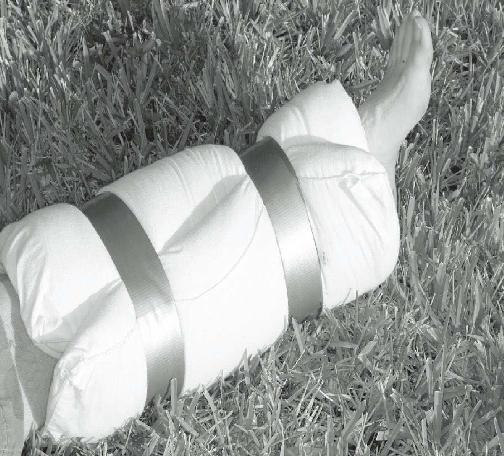
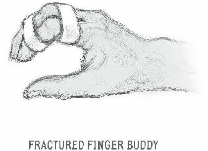
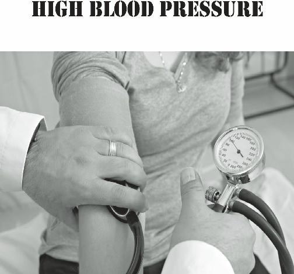

Natural remedies to treat bed bugs include dusting seams with diatomaceous earth; the bugs consume it and it tears up their insides. Many people swear by tea tree oil and rubbing alcohol as well. Here’s a time-honored herbal bedbug treatment:
1 Cup Water
Lavender essential oil (10 drops)
Rosemary essential oil (10 drops)
Eucalyptus essential oil (10 drops)
Clove bud essential oil (optional)
Place in a fine mist spray bottle
Shake well before using
As bed bugs can live for months without a meal, it’s important to maintain long-term diligence in identifying these pests wherever you hang your hat during rough times. These bugs may not end your life, but they can certainly affect the quality of it. Educate your loved ones to be aware of the environment and look for dangerous insects (and, of course, snakes) whenever they are doing outside work.
Others
Some insect bites are not dangerous due to toxins, but can cause infectious disease. Ticks can transfer Lyme disease and mosquitos can transfer Malaria, for example.
The best way to prevent these is by wearing protective clothing whenever you go outside, and having insect repellant (DEET) in good amount in your storage. Both tick and mosquito bites are dealt with in other sections of this book.
Citronella, commonly used as an insect repellant in candles, can be found naturally in some plants. The citronella plant is hardy and grows anywhere there are periods of warm weather. It is distasteful to a number of pests. Consider it for your medicinal garden.

Head injuries can be soft tissue injuries (brain, scalp, blood vessels) or bony injuries (skull, facial bones), so
I’ve placed this section between soft tissue and orthopedic problems. Damage is usually caused by direct impact, such as a laceration in the scalp or a fracture of the part of the skull that contains the brain (also called the “cranium”).
An “open” head injury means that the skull has been penetrated with possible exposure of the brain tissue. If the skull is not fractured, it is referred to as a “closed”
injury.
Damage can also be caused by the rebound of the brain against the inside walls of the skull; this may cause tearing of the blood vessels in the brain, which can result in a hemorrhage. There may be no obvious penetrating wound in this case; the original trauma may even have occurred at a site other than the head. An example of this would be the violent shaking of an infant.
Anyone with a traumatic injury to the head must always be observed closely, as symptoms from bleeding and swelling may take time to develop.
The brain requires blood and oxygen to function normally. An injury which causes bleeding or swelling inside the skull will increase the intracranial pressure.
This causes the heart to work harder to get blood and oxygen into the brain. Blood accumulation (known as a
“hematoma”) could occur within the brain tissue, itself, or from between the layers of tissue covering the brain.
Without adequate circulation, brain function ceases.
Pressure that is high enough could actually cause a portion of the brain to push downward through the base of the skull. This is known as a “brain herniation” and, without modern medical care, will almost invariably lead to death.
Most head injuries result in only a laceration to the scalp and a swelling at the site of impact. Cuts on the scalp or face will tend to bleed, as there are many small blood vessels that travel through this area. This bleeding, although significant, does not have to signify internal damage; most cases can be treated as any other laceration. There are a number of signs and symptoms, however, which might identify those patients that are more seriously affected. They include:
Loss of Consciousness
Convulsions (Seizures)
Worsening Headache
Nausea and Vomiting
Bruising (around eyes and ears)
Bleeding from Ears and Nose
Confusion/Apathy/Drowsiness
One Pupil More Dilated than the Other
Indentation of the Skull
A person with trauma to the head may be knocked unconsciousness for a period of time or may remain completely alert. If consciousness is NOT lost, the patient may experience a headache and could require treatment for superficial injuries. After a period of observation, a head injury without loss of consciousness is most likely not serious unless one of the other signs and symptoms from the above list are noted.
Loss of consciousness for a very brief time (say, 2 minutes or so) will merit close observation for the next
48 hours. A head injury of this type is called a
“concussion”. This patient will usually awaken somewhat “foggy”, and may be unclear as to how the injury occurred or the events shortly before. It will be important to be certain that the patient has regained normal motor function. In other words, make sure they can move all their extremities with normal range and strength. Even so, rest is prescribed for the remainder of the day, so that they may be closely watched.
When your patient is asleep, it will be appropriate to awaken them every 2-3 hours, to make sure that they are easily aroused and have developed none of the danger signals listed above. In most cases, a concussion causes no permanent damage unless there are multiple episodes of head trauma over time, as in the case of boxers or other athletes.
If the period of unconsciousness is over 10 minutes in length, you must suspect the possibility of significant injury. Vital signs such as pulse, respiration rate, and blood pressure should be monitored closely. The patient’s head should be immobilized, and attention should be given to the neck and spine, in case they are also damaged. Verify that the airway is clear, and remove any possible obstructions. In a collapse, this person is in a life-threatening situation that will have few curative options if consciousness is not regained.
Other signs of a significant injury to this area are the appearance of bruising behind the ears or around the eyes (the “raccoon” sign) despite the impact not occurring in that area. This could indicate a fracture with internal bleeding. Bleeding from the ear itself or nose without direct trauma to those areas is another indication. The fluid may be clear and not bloody; this may represent spinal fluid leakage.
In addition, intracranial bleeding may cause pressure that compresses nerves that lead to the pupils. In this case, you will notice that your unconscious patient has one pupil more dilated than the other.
A stroke, (also known as a cerebrovascular accident or CVA), is damage to the brain caused by lack of blood supply. This could occur in a head injury due to a blockage of blood to a portion of the brain. This blockage could be due to a clot, a hemorrhage, or anything else that compromises the circulation in the area. Whatever functions are associated with the part of the brain affected will be lost or impaired. This might include the inability to speak, blindness, or loss of normal comprehension. Symptoms, such as paralysis or weakness, are often on one side of the body and/or face.
The stroke is usually heralded by a sudden severe headache.
Strokes may also occur due to other reasons as well, such as uncontrolled high blood pressure. Although it may not be difficult to diagnose a major CVA in an austere setting, few options will exist for treating it.
Blood thinners might help a stroke caused by a clot, but worsen a stroke caused by hemorrhage. It could be difficult to tell which is which without advanced testing.
Keep the victim on bed rest; sometimes, they may recover partial function after a period of time. If they do, most improvement will happen in the first few days.
Trauma to the head may have negligible consequences, or it could have life-threatening consequences. In some circumstances, there may be little that you, the medic, can do in a long-term survival situation.

Bones, joints, muscles and tendons give the body support and locomotion, and there is no substitute for having all your parts in good working order. The amount of work these structures will be called upon to do after a disaster will be greatly increased. Off the grid, there will be additional strain put on the body. Therefore, the medic will expect to see more injuries; it is important to know how to identify and treat these problems.
Prior to a collapse, it is recommended to have whatever surgical repairs of any orthopedic faults you happen to have. Knees, shoulders, ankles and other joints are commonly damaged due to long-term abuse, and it pays to “tune” these up while modern surgical care is still available. Many surgeries these days are done through very small incisions, and most can be done as an outpatient.
Many people have heard of ligaments, tendons, sprains, and strains but have little idea of what they really are. Therefore, let’s define some anatomical terms:
Joint: the physical point of connection between two bones, usually allowing a certain range of motion. For example, the knee or elbow joint.
Ligament: The fibrous tissue that connects one bone to another, oftentimes across a joint.
Tendon: Tissue that extends from muscle to connect to bone.
Sprain: An injury where a ligament is excessively stretched by forcing a joint beyond its normal range of motion.
Strain: When the muscle or its connection to the bone (tendon) is partially torn as a result of an injury.
Rupture: A complete tear through a ligament or muscle.
Sprains
Our joints are truly marvels of engineering. They help provide mobility and locomotion and sometimes bear an incredible amount of stress without mishap. They are moving parts, however, and moving parts wear down.
In long-term survival situations, our level of physical exertion goes up a notch and the risk of injury to the joints increases as well.
You can expect the most common sprains in your group to involve the ankle, wrist, knee or finger. The most likely signs and symptoms are bruising, swelling, and pain. It’s a rare individual who has never experienced this injury, in varying degrees of severity, over the course of their life.
Treatment for most sprains is relatively straightforward and follows the easy-to-remember
R.I.C.E.S. protocol:
REST: It is important to avoid further injury by not testing the injured joint. Stop whatever actions led to the injury and you will have the best chance to recover fully.
Failure to rest is a common mistake for many athletes, who will continue to stress the joint by continuing strenuous activity. As a result, the partially-healed ligament will re-injure itself and permanent damage may occur.
In a survival scenario, you may not have the luxury of rest. If not, expect chronic problems in the weakened joint.
ICE: Cold therapy decreases both swelling and pain.
The earlier it is applied, the better effect it will have in speeding up the healing process. If you’re in the wilderness, you might have to stick your ankle in a stream to get some cooling action, although you can keep some cold packs in your backpack that can be activated by shaking.
Cold therapy should be performed several times a day for 20-30 minutes or so each time for the first 24-48 hours. This is followed each time by applying compression.
COMPRESSION: A compression bandage is useful to decrease swelling and should be placed after each cold therapy. This will also help provide support to the joint. After applying some padding to the area, wrap an elastic “ACE” bandage, starting below the joint and working your way up beyond it. The wrap should be tight, but not uncomfortably so.
Any tingling, increased pain or numbness tells you that the wrap is too tight, and should be loosened somewhat. Additionally, an excessively tight wrap may affect the circulation, and you may notice the fingertips or toes becoming white or even blue.
ELEVATION: Elevate the sprain above the level of the heart. This will help prevent swelling at the site of the injury. Swelling is caused by fluid that pools where the inflammation is (“edema”), and likes to accumulate where gravity will allow. By elevating the leg, you allow the fluid to process itself back into your circulation and aid the healing process, or at least not impede it.
This also works for swollen ankles due to chronic medical problems, like high blood pressure; even pregnant women achieve relief from swollen ankles in this fashion.
STABILIZATION: Immobilizing the injury will prevent further damage. This may be accomplished by the compression bandage alone or may best be supported with a splint or a cast. if the patient is unable to place much weight on the joint, this strategy will be especially useful.
Splints may be commercially produced, such as the very useful SAM (Structural Aluminum Malleable) splint, or may be improvised with sticks, cloth or pillows and duct tape. Make sure the injured joint is immobile after placement of the splint.
I am often asked how to tell the difference between a sprain and a fracture. Sometimes it’s quite easy, as when a straight bone is suddenly “zig-zag” in shape.
Many times, it’s quite difficult and hard to determine without modern diagnostic tests (which won’t be available in a long-term survival situation).
You can, however, look for one or more of these signs:
A fracture will generally have more pronounced swelling and bruising.
A fracture is generally so painful that no traction or pressure may be placed on the injury.
A fracture may have a deep cut in the area of the injury (This is called an “open” fracture and is particularly dangerous due to the risk of infection).
A fracture may show motion in an area beyond the joint (if your finger suddenly has five knuckles, you probably broke it).
A fracture may present a grating sensation when pressing upon it.
For sprains, Ibuprofen serves as an excellent antiinflammatory and pain reliever. Natural remedies may also help. The underbark of willow, aspen and poplar trees have Salicin, a natural pain medicine.
Most sprains, (such as wrist and ankle sprains)
commonly heal well over time using the R.I.C.E.S.
protocol, pain relievers, and a lot of rest. Others, however, such as severe knee sprains with torn or ruptured ligaments, may heal completely only with the aid of surgical intervention.
It’s important to get joint issues dealt with while we still have modern medicine to help us. If you need surgery to fix a bum knee, do it now. In uncertain times, you (and your joints) want to be in the best shape possible to face the challenges ahead.
Strains
By far, the most frequently seen strain will be to the back muscles. Strains, especially back strains, involve injury to the muscle and their tendons (which connects them to the bone). As the lower part of the back holds the majority of the body’s weight, you can expect the most trouble here. Some of these injuries are preventable with some simple precaution:
Every morning, you should perform some stretching, to increase blood flow to cold, stiff muscles and joints.
When you lift a heavy object, such as a backpack, keep your back straight and let your legs perform the work.
The object should be close to your body as you lift it (don’t reach for it).
For packs, keep the weight on the hips rather than the shoulders.
If you are on rocky or unstable terrain, consider using a walking stick for balance.
remember, any weight-lifting action that you perform while being off-balance is likely to result in a strained muscle.
Ibuprofen is an excellent anti-inflammatory and pain reliever for these types of injury. For muscle injuries, prescription relaxants such as Diazepam (Valium) or
Cyclobenzaprine (Flexeril) will also provide relief. If these are not available, the patient will benefit from mild massage.
A number of alternative remedies exist for the treatment of mild-moderate sprains and strains. Essential oils are considered helpful to clear up bruising. Apply 23 drops of oil of Helichrysum, cypress, clove, or geranium, mixed half and half with carrier oil such as coconut or olive, 3-5 times a day on the area of bruising.
To decrease swelling, apply Helichrysum oil, undiluted, to the affected area. Willow under bark or ginger tea has anti-inflammatory properties; drink with warm raw honey, several times a day.
Common herbal pain relievers for orthopedic injuries include direct application of Oil of wintergreen, helichrysum, peppermint, clove, or diluted arnica to the affected area. Blends of the above may also be used.
Herbal teas that may give relief are valerian root, willow under bark, ginger, passion flower, feverfew, and turmeric. As always, drink warm with raw honey several times a day.
Some sprains and strains, (such as wrist and ankle sprains or back strains) commonly heal well over time with the above therapy. Other injuries may cause chronic pain and eventual degeneration of the joint. It will be difficult to foretell the progress of an injured joint without modern diagnostic imaging.

A dislocation is an injury in which a bone is pulled out of its joint by some type of trauma. Dislocations commonly occur in shoulders, fingers, and elbows, but knees, ankles and hips may also be affected. The joint involved looks visibly abnormal and is unusable. Bruising, pain, and/or numbness often accompany the injury.
If the dislocation is momentary and the bone slips back into its joint on its own, it is called a subluxation.
Subluxations can be treated the same way that sprains are, using the R.I.C.E.S. method. It should be noted that the traditional medical definition of subluxation is somewhat different from the chiropractic one.
Of course, if there is medical care readily available, the patient should go directly to the local emergency room. General anesthesia if often used to resolve the problem. In a collapse, however, you are on your own and will probably have to correct the dislocation yourself. This is known as performing a “reduction” of the injury.
Reduction is easiest to perform soon after the dislocation, before muscles spasm and the inevitable swelling occurs. Not only does reducing the dislocation decrease the pain experienced by the victim, but it will lessen the damage to all the blood vessels and nerves that run along the line of the injury.
The faster the reduction is performed, the less likely there will be permanent damage. It should be noted that a dislocated joint may be permanently damaged. It may have a tendency to go out of place again in the future.
Expect significant pain on the part of the patient during the actual procedure, however. Some pain relievers like ibuprofen might be useful to decrease discomfort from the reduction. Muscle relaxers such as
Cyclobenzaprine (Flexeril) are also helpful, but these are
“by prescription only”.
The use of traction will greatly aid your attempt to fix the problem. Traction is the act of pulling the dislocated bone away from the joint to give the bone room to slip back into place.
The procedure is as follows:
Stabilize the joint that the bone was dislocated from (the shoulder, for example) by holding it firmly.
Using a firm but slow pulling action, pull the bone away from the joint. This will make space for the bone to realign.
Use your other hand (or preferably a helper’s hands) to push the dislocated portion of the bone so that it will be in line again with the joint socket. The bone will naturally want to revert to its normal position in the joint.
After the reduction is complete and judged successful, splint the bone as if it were a fracture (see next section).
Some dislocations, such as a dislocated finger, may take as little as 2-3 weeks to regain normal function. Others, such as hip dislocations, may take many months to heal.

If enough force is applied, an injury to soft tissues can damage the skeletal structure underneath. When a bone is broken, it is termed a fracture. There are several types of fractures:
Reduced or “Stable” fracture. In the simplest fracture, the broken ends of the bone are barely out of place.
Open or compound fracture. In a compound fracture, the skin is pierced by the broken bone or there is some other penetrating trauma. The end of the bone may be above or below the level of the skin.
Comminuted fracture: The bone shatters into several pieces.
Oblique/Transverse fracture: the line of the broken bone may be horizontal or at an oblique angle.
Greenstick fracture: One side of the bone snaps, the other remains intact. Reminiscent of the result of trying to snap live wood in two.
For our purposes, let’s assume that they are all either
“open” or “closed”. A closed fracture is when there is a break in the bone, but the skin is intact (all of the above except the compound fracture). An open fracture is when the skin is broken.
Needless to say, there is usually more blood loss and infection associated with an open wound. The infection may be deep in the skin (cellulitis), the blood (sepsis), or the bone itself (osteomyelitis) and could be life threatening if not treated. If poorly managed, a closed fracture can become an open fracture.
The diagnosis of a broken bone can be simple, as when the bone is obviously deformed, or difficult, as in a minimal, “hairline” fracture. X-rays can be helpful to differentiate a small fracture from a severe sprain, but that technology won’t be available in a power-down situation. There are some ways to tell, however (also discussed under sprains):
A fracture will manifest with severe pain and inability to use the bone (for example. The patient cannot put any weight whatsoever on a broken ankle). Someone with a sprain can probably put some weight, albeit painfully, on the area.
More pronounced swelling and bruising will likely be present on a fracture than a sprain.
A grinding sensation may be felt when broken ends of a bone rub together.
A deep cut in the area of the injury is a likely sign of an open fracture.
Motion of the bone in an area where there is no joint is another dead giveaway that there is a fracture. If you notice that your injured finger appears to have 5 knuckles, you’re probably dealing with a fracture.
Dealing with a fractured bone involves first evaluating the injured area for the above signs and symptoms. Use your bandage or EMT scissors to cut away the clothing over the injury. This will prevent further injury that may occur if the patient was made to remove their own clothing. First, check the site for bleeding and the presence of an open wound; if present, stop the bleeding before proceeding further.
Fractures may cause damage to the patient’s circulation in the limb affected, so it is important to check the area beyond the level of the injury for changes in coloration (white or blue instead of normal skin color)
and for strong and steady pulses. Usually, normal color returns to skin in the fingertips within 2 seconds of applying pressure and then releasing. This is known as the “Capillary Refill Time” and is discussed in the section of this book on triage.
To find out what a strong pulse feels like, place two fingers on the side of your neck until you feel your neck arteries pulsing. You will do this same action on, say, the wrist, if the patient has broken their arm. Lightly prick the patient in the same area with a safety pin to make sure they have normal sensation. If not, the nerve has been injured.
If the bone has not deformed the extremity, a simple splint will immobilize the fracture, prevent further injury to soft tissues and promote appropriate healing.
Oftentimes, however, the bone will be obviously bent or otherwise deformed, and the fracture must be “reduced”
as we discussed with dislocations. Although this will be painful, normal healing and complete recovery will not occur until the two ends of the broken bone are realigned to their original position.

Reducing a deformity is best performed with 2 persons and a sedated patient. One supports and provides traction on the side closest to the torso, and the other exerts steady traction on the area beyond the fracture. Often, some form of traction is needed to keep the broken ends of the bone in place. There are risks to this procedure; nerves and blood vessels can be damaged, but normal healing will not occur in a deformed limb.
Splint the extremity in place immediately after performing the reduction. In an open fracture, thorough washing of the wound is absolutely necessary to prevent internal infection. Infection will invariably occur in a dirty wound, even if the reduction is successful.
Therefore, antibiotics are important to prevent complications such as osteomyelitis. Always check the pulses and capillary refill time after the reduction is performed; this will assure adequate circulation beyond the level of the injury.
It is very important to immobilize the fractured bone in such a fashion that it is allowed to heal. When you are responsible for the complete healing of the broken bone, remember that the splint should immobilize it in a position that it normally would assume in routine function.
For legs: The leg should be straight, with a slight bend at the knee.
For arms: The elbow should be flexed at a 90 degree angle to the upper arm.
For ankles: The ankle should be at a 90 degree angle to the leg.
For wrist: The wrist should be straight or slightly extended upward.
For fingers: The fingers should be slightly flexed, as if holding a glass of water.
As previously mentioned, splints can be commercially produced (e.g., SAM splints), or may be improvised, using straight sticks with bandannas or T-shirt strips to immobilize the area. Another option is to fold a pillow around the injury and duct tape it in place.

Pillow Splint
For most fractures, you will want to consider the placement of a cast to enforce immobilization. Casting material using plaster of paris or fiberglass is easy to obtain and lasts a long time. It’s a useful addition to any medical storage.
When placing a cast, you will first start with a liner of cotton known as a “stockinette”. Then, you will need rolls of padding to form a barrier between the skin and the cast. Rolls of plaster of Paris or fiberglass are then immersed in water for 20 seconds or so. Wring out the excess water (keep the end of the roll between your fingers or it will stick and be difficult to find).
Then, you will begin to slowly roll the casting material around the area of the fracture, smoothing it out as you go along. Advance one half of the thickness of the roll as you go from beyond the fracture towards the torso. You will want perhaps three layers of casting material on the area, more in places where there is a bony prominence, such as the wrist.
Each fracture is casted somewhat differently:
Stockinettes, padding, and casting rolls are available in different widths and lengths appropriate to the particular fracture. For comfort and cleanliness, plastic wrap is helpful to cover the cast during bathing. A wet cast is a smelly cast.
Although oscillating saws are used today to remove casts, they require the availability of electricity. There are still special heavy-duty shears available for the purpose, although some effort is needed to perform the removal.
To review: Your goal is to immobilize the fracture in a position of function. Use padding under the splint or cast as possible to keep the injured area stable and protected. Most fractures require 6-8 weeks to form a
“callous”; this is newly formed tissue that will reunite the broken ends of the bone. Larger bones or more complicated injuries take longer. If not well-realigned, the function of the affected extremity will be permanently compromised. References to books devoted to the subject are listed at the end of this volume.

Fingers and toes may be splinted by taping them to an adjoining digit. This is called the “buddy method”. There are small manufactured splints that will also do the job.
Neck injuries may be particularly serious, and an investment should be made in purchasing a good neck
“collar”.
Rib Fractures and Pneumothorax
Rib fractures are commonly treated by firmly taping the affected area, as it is the motion of breathing that causes the pain associated with the injury. Although reduction is usually not necessary, taping the area may help provide pain relief.
Rib fractures become more serious if the fracture punctures a lung, causing a condition known as a
“pneumothorax”. Air from the puncture enters the chest cavity, which compresses the lung and collapses the organ.
Although a person with a rib fracture will complain of pain with breathing, a person with a pneumothorax will have signs of bluish skin coloration (this is called
“cyanosis”), distended neck veins, and signs of shock.
If you use a stethoscope, you will hear the sounds familiarly associated with Rice Krispies cereal when you listen to the lungs, or perhaps no breath sounds at all from the affected area.
If, and only if, the pneumothorax has become lifethreatening (known as a “tension pneumothorax”), should you act. Lung decompression can’t be taken lightly, and should only be attempted if it’s clear the patient will die without action taken on their behalf.
This is what you do: Clean the area of the chest above the third rib midway between the top of the shoulder and the nipple. Using a sharp object no wider than a pencil, poke a hole ABOVE the rib (the blood vessels travel below the rib) deep enough to hear air pass through. A large gauge (14g or larger) spinal needle will be large and long enough to do the job, so consider purchasing this from a medical supply store.
You goal is to provide a way for the air to continue to escape from the incision you made, but not to go back in. Take a square of saran wrap or a plastic bag and firmly tape it above the skin incision on three sides only. This will serve as a valve, and allow air to escape, while allowing the lung to re-inflate. It should be noted that there are lung decompression kits that are available commercially.
Inflammatory or bloody fluid is likely to accumulate in many lung wounds. You will have to rig a drainage system to prevent too much fluid from preventing adequate air passage. A rubber tube connected to a jar placed below the patient may perform this duty by using gravity. It will not, however, be as efficient as the electric suction systems available at your local hospital.
It’s important to realize that this type of wound will be difficult to recover from. If modern medical care is not available, expect the worst.
In rare circumstances, damage to a limb may be so extensive that it cannot be saved. Amputation is the surgical removal of all or part of an extremity. This procedure is performed on arms, legs, hands, feet, fingers, or toes. Amputation of a part of the leg is the most common amputation surgery.
An amputation, in a survival situation, is a procedure of last resort. In many cases, your patient will not survive it. At least 25% of American civil war soldiers undergoing the procedure lost their lives due to complications. The closer to the body that the amputation was performed, the higher the death rate will be. It’s unlikely there will be much improvement in survival in future times of trouble.
There are various reasons that an amputation may be necessary. The most common is poor circulation because of damage to blood vessels. Without reasonable blood flow, tissue may not get enough oxygen to remain viable. Infection and gangrene (discussed in the section on frostbite) may set in.
Below are some reasons that an amputation may be indicated:
Extensive injury from trauma or burns.
Cancerous tumors
Serious infection that does not get better with antibiotics
Severe frostbite
Gangrene
Several methods are used to identify where to cut and how much to remove:
Checking where an extremity loses a pulse.
Areas when a limb loses normal temperature.
Looking for areas of reddened skin (infection)
or blackened skin (gangrene)
Checking where the extremity is no longer sensitive to touch.
Identifying areas where the bone has been crushed beyond repair.
Basic measures to increase the chances of a successful amputation are:
Sedate the patient as much as possible.
Clean the damaged area with Betadine or other antiseptics before the procedure.
Use sterile gloves in a sterile field
Remove debris and bits of shattered bone.
Tie off bleeding blood vessels.
Preserve an adequate amount of living tissue to cover the exposed end of the bone.
Shorten and smooth the bone enough to decrease irritation to the covering soft tissue.
Stitch remaining muscle to the bone lining (also known as the “periosteum”). This is difficult without special equipment.
Before closing completely, place a drain
(discussed earlier in this book) to allow blood and inflammatory fluid to leave the surgical site.
Adequately close the wound with sutures or staples.
Change dressings regularly.
Observe for infection. Start a course of antibiotics.
Amputation is a procedure I hope you will never have to consider. In severe injuries, however, it may be lifesaving.

As a caregiver in a long-term survival scenario, you cannot expect that everyone under your care will start off in perfect health. It is likely that one or more members of your family or group will have a longstanding medical issue that cannot be ignored.
The amount and diversity of chronic medical issues may test the medic’s fund of knowledge. You will be challenged to formulate strategies for power-down situations that you know are inferior to those available in modern times. Despite this, you must take action to be ready for difficult times or your patient may suffer the consequences.
You would probably be surprised at how many of your friends have chronic illnesses or conditions that you are unaware of. Even those you may have known for decades may not make it a habit of discussing their medical issues with you. As the person responsible for their medical wellbeing in a collapse, however, it is your duty to obtain full histories from everyone in your party.
Without obtaining this information, you will be less effective in your role.
Thyroid malfunction, diabetes, and heart disease are just some of the issues; these illnesses require medications that will not be manufactured in times of trouble. We must, therefore, think “outside the box” to formulate a medical strategy for these patients that does not include modern technology.
Its goes without saying that medical conditions that are poorly controlled now could be completely out of control in a collapse situation. The most important way to preserve your family’s health will be to have any chronic conditions appropriately treated and monitored prior to a catastrophe.
While you have the benefit of modern medical care
(and, perhaps, medical insurance), take full advantage of any option that will tune up chronic problems. Eliminate dental issues you might have ignored, repair that defective knee joint or get corrective vision surgery. In hard times, you’ll need to function at 100% efficiency.
If you ignore your medical issues now, how can you expect to keep it together if things fall apart, whether it’s your health or that of others?
This section will discuss some of the most common diseases that people have to deal with today. The successful caregiver will develop a plan of action that will keep those with chronic medical problems out of trouble. If we ever find ourselves on our own, having a plan in place will increase a medic’s effectiveness and improve the health of the community.

The thyroid gland is positioned just in front of and below the Adam’s apple (“also known as the laryngeal prominence”) and produces hormones that help regulate your metabolism. The organ produces substances that regulate growth, energy and the body’s utilization of other hormones and vitamins.
The thyroid gland is involved in maintaining a hormonal balance between itself and two other organs, the “pituitary gland” and the “hypothalamus”. These two organs can be found near the base of the brain. When this balance is disturbed in some way, we experience thyroid dysfunction. Thyroid conditions usually involve the production of either too little or too much of these hormones. These malfunctions are most commonly seen in women.
A thyroid problem that might be common in an austere setting is the development of a lump on the thyroid (known as a “goiter”). This is the result of a deficiency of iodine in the body, and is one of the reasons why common table salt is “iodized”. Potassium
Iodide tablets (discussed in the section on radiation) may be a treatment option if no other source of iodine is available. It should be noted that iodine-containing drugs should not be administered to those with allergies to seafood.
A person may have a lump on the thyroid that is not associated with iodine deficiency. It can exist without causing symptoms or even disturbed thyroid hormone levels. A lump may present as a cyst (a mass filled with fluid) or a nodule (a solid mass), and usually has no major ill effect. These are considered to be “cold”
tumors. Some thyroid tumors, however, are “hot” and produce excessive amounts of hormone. Thyroid cancer is relatively rare, even in the elderly, unless there has been exposure to radiation.
Hyperthyroidism
The excessive production of thyroid hormone is known as
Hyperthyroidism.
Determination of thyroid malfunction depends on certain blood tests and sometimes a scan of the gland. These modalities will be gone in a collapse, so it’s important to learn what a person with elevated thyroid levels looks like. Some common signs and symptoms of this condition in adults are:
Insomnia
Hand tremors
Nervousness
Feeling excessively hot in normal or cold temperatures
Eyes appear to be bulging out or “staring”
Frequent bowel movements
Losing weight despite normal or increased appetite
Excessive sweating
Weight loss
Menstrual period becomes scant, or ceases altogether
Growth and Puberty issues (children)
Muscle Weakness, Chest Pain and Shortness of Breath (elderly)
Poorly controlled hyperthyroidism can lead to a condition known as thyroid “storm”, in which large levels of hormone cause major effects on the heart and brain. All the above symptoms may combine with elevated heart rate and blood pressure to endanger the patient’s life.
Treatment of hyperthyroidism involves medications such as Propylthiouracil and Methimazole, which block thyroid function. These medications should be stockpiled if you’re aware of a member of your group with hyperthyroidism, as they will be hard to find if modern medical care is no longer available.
Substances such as I-131 (also known as radioiodine) have been used to actually destroy the thyroid. As you can imagine, this often results in the patient producing no thyroid hormone at all. I-131 treatment is useful in severe hyperhyroidism, but is also unlikely to be available in a collapse.
Iodide is also useful in blocking the excessive production of thyroid hormone, and can be found in
Kelp in good quantity. The anti-radiation medication KI
(Potassium Iodide) might be an additional option in this situation. Unfortunately, the use of Iodides, while a known treatment, may actually worsen the condition in some cases.
Dietary restriction of nicotine, caffeine, alcohol and other substances that alter metabolism will be useful as well. Vitamins C and B12 are thought to have a beneficial effect on those with this condition, as does L-Carnitine.
L-Carnitine is beneficial in that it may lower thyroid hormone levels without damaging the gland.
Foods that are thought to depress production of thyroid hormone include cabbage, cauliflower, broccoli,
Brussels sprouts, and spinach. In addition, foods high in antioxidants are thought to reduce free radicals that might be involved in hyperthyroidism. These include blueberries, cherries, tomatoes, squash and bell peppers, among many others.
Hypothyroidism
More commonly seen than hyperthyroidism, hypothyroidism is the failure to produce enough thyroid hormone. Various causes of low thyroid levels exist, such as certain drugs or exposure to radiation. Also, the immune system sometimes misfires and targets the thyroid. The most commonly seen signs and symptoms of hypothyroidism in adults are:
Fatigue
Intolerance to cold
Constipation
Poor appetite
Weight gain
Dry skin
Hair loss
Hoarseness
Depression
Menstrual irregularity
Poor Growth (Children)
If ignored, additional symptoms might appear, such as:
Thickened skin
Hair loss
Vocal changes
Swollen appearance of hands, feet, and face
It should be noted that untreated hypothyroidism in a pregnant woman may cause birth defects in the baby.
The treatment of this condition is based on the oral replacement of the missing hormone, which is called
“thyroxine”. These drugs come in a variety of dosages, and it is important to determine the appropriate dose for your patient while modern medical care is still available.
The lowest dose that will maintain normal thyroid levels is indicated; too much may cause hyperthyroidism.
Once you have determined the right dosage, you may consider, in normal times, asking a physician for additional supplies or perhaps a prescription for a higher dose. This might allow you to use, say, half of the pill in the present and stockpile the other half for the uncertain future. Only do this if you intend to follow your physician’s advice as to your dose. There is no benefit
(but significant risk) to taking more thyroid replacement medicine that you should.
Besides standard thyroid medications such as
Synthroid and Levothyroid, there are a number of other remedies that may have effect in improving hypothyroidism. A number of thyroid extracts are available which consist of desiccated and powdered pig or cow thyroid gland. The amount of thyroid hormone in these extracts may be variable; therefore, the medical establishment recommends against the use of these supplements.
Having said this, in the absence of modern medications, it is better than nothing. One strategy that may help you decide what natural supplement may be right for you is to ask your physician to monitor your thyroid levels for 2-4 weeks or so while you try it out. If your thyroid levels drop precipitously, it may have little or no effect, and you should research other options. If your thyroid levels remain normal, continue monitoring long term to determine whether the particular product might be worthwhile to stockpile.
From a dietary standpoint, you should avoid foods that depress thyroid functions. These include:
Cauliflower
Broccoli
Brussels sprouts
Spinach
Cabbage
A number of natural supplements, such as Thyromine, are commercially available. They are combinations of various herbs that are touted as beneficial for both low and high thyroid conditions. Your experience may vary.
Diabetes is a common, yet devastating disease. It is characterized by high sugar (also called “glucose”)
levels. Uncontrolled diabetes is known to cause damage to various organs, such as the kidneys, eyes, and heart.
The incidence of the disease has been increasing over time in developed countries, perhaps due to issues relating to obesity.
Diabetes is especially problematic for the survival medic in that the medications used to treat the worst cases are unlikely to be produced in a grid-down scenario. Diabetic medications, such as insulin, lose potency over time. Therefore, an alternative strategy to keep diabetics from losing complete control of their blood sugar will have to be formulated.
Type 1 Diabetes (known in the past as juvenile diabetes or insulin-dependent diabetes) results from the failure of the pancreas to produce insulin. Insulin is a hormone that controls the level of sugar in your system.
The destruction of the cells in the pancreas that produce
Insulin is thought to be caused by an autoimmune response. This means that the body’s own immune system attacks parts of itself. Type 1 diabetes is often first diagnosed in childhood, but 60% of new cases are now found in those over the age of 40.
Type 2 Diabetes (known in the past as adult-onset or non-insulin dependent diabetes) is more commonly the result of the resistance of the cells in your body to the insulin produced by the pancreas. Insulin is required to move sugar (glucose) into cells; there, it is stored and later used to produce energy for the body.
In type 2 diabetes, certain cells do not respond appropriately to insulin. This is referred to as “insulin resistance”. Glucose fails to enter these cells and, therefore, it accumulates in the blood. High blood sugar is known as “hyperglycemia”.
Obesity is thought to be a major factor in Type 2 diabetes. Most people are, indeed, overweight when the diagnosis is made. Although rare in the past, more children are being found with the condition; again, this is related to the epidemic of obesity in modern societies.
Diabetes (mild or severe) may also develop in some pregnancies, even in non-diabetic women. Some believe that those that get diabetes during their pregnancies may be prone to diabetic issues later in life.
The three classic symptoms of diabetes are:
1. Excessive thirst
2. Excessive hunger
3. Frequent urination.
Uncontrolled diabetes causes eye and kidney problems, leading to blindness and renal failure. It worsens coronary artery disease, increasing the chances for heart attacks and other cardiac issues. Weight loss may occur despite the consumption of more food; the cells cannot access the glucose in the blood for energy to produce mass.
Cuts and scrapes, especially in the extremities, are slow to heal. Over time, nerve damage occurs which causes numbness, pins and needles sensations and, in the worst cases, gangrene. Many severely uncontrolled diabetics may require amputation.
As type 2 Diabetes is most often seen in older, heavier, and less active individuals, weight control and close attention to controlling the amounts of carbohydrates (which the body turns into sugars) in the diet is important. In some cases, decreasing excess weight and frequent small meals may reverse Type 2 diabetes in its entirety. Regular exercise will also decrease blood sugar levels, and improve glucose control. The most popular medication used for treatment is called Metformin, which works in various ways, including increasing the cells’ sensitivity to insulin. In tablet form, it is a good candidate for medical storage.
Type 1 Diabetes is more problematic, as many with this medical problem have large swings in their sugar
(glucose) levels. Insulin has been used since its formulation in 1921 to control severe diabetes. Regular monitoring of blood glucose levels and appropriate treatment with the right amount of Insulin is necessary to remain healthy.
There are two common diabetic emergencies. These are related either to very low or very high glucose levels.
If a diabetic, especially Type 1, fails to eat regularly or in accordance with his Insulin therapy, he or she may develop “hypoglycemia”. Hypoglycemia can occur very rapidly, and symptoms commonly seen are sweating, loss of coordination, confusion, and loss of consciousness.
In this case, a drink containing sugar will rapidly resolve the condition. Never give liquids to someone who is unconscious, however; the fluids could go down the respiratory passages and suffocation could occur. If the patient is not mentally alert, place some sugar granules under the tongue. This will absorb rapidly without causing the tendency to choke.
On the other hand, very high glucose levels lead to a condition called “Diabetic Ketoacidosis”. This occurs as a result of missed Insulin doses and/or chronically under-dosed
Insulin.
The patient will have a characteristic “fruity” odor to his or her breath. In addition to the usual symptoms, there will be nausea, vomiting, and abdominal pain as well. This is a major emergency which could lead to coma and even death.
Small amounts of clear liquids are acceptable in someone with this condition, but without Insulin, the prognosis is grave.
Insulin can be purchased without a prescription in the U.S. Needless to say, Insulin, like most liquid medications, will lose potency relatively soon after its expiration date. Due to the complexity of the manufacturing process, it is unlikely to be available in a collapse situation. What, then, can be done to maximize glucose control?
Prevention is the best way to avoid hypoglycemia and/or Diabetic Ketoacidosis. In a collapse situation, alternatives will be needed to provide a modicum of diabetic control. In hard times, the goal will be to prevent ketoacidosis. Diabetics will be unlikely to have perfect control, especially Type 1 diabetics, but it may be possible to keep their sugars low enough to prevent a major complication. Even a few months of less than optimal control may be survivable and might give you some time for society to re-stabilize.
One therapeutic option is to stockpile the highest dose of Metformin (oral diabetes medicine) in the hope that it will have some benefit to the Insulin-deprived
Diabetic. It will be helpful for type 2 diabetics, but will only deal with the issue of insulin resistance.
Unfortunately, it will not make the pancreas produce insulin. Metformin is not as strong a drug as Insulin, and it is uncertain what benefit it may do a pure Type 1 case.
Even if it just prevents the diabetes from going completely out of control for a time, however, it is worth a shot.
A recent study suggests that Metformin may be used along with insulin. In some diabetics, the addition of
Metformin resulted in lower amounts of insulin required for control. This is of interest to the survival medic, who may have expiring insulin medications that may be made more effective by adding Metformin. More study is warranted.
Another option is to regulate diet severely and subsist on a diet almost entirely comprised of protein and fats.
The key is to restrict caloric intake significantly. This will be harmful in the long run, but frequent, small, highprotein meals may give some time for a short-term societal destabilization to resolve.
Type 2 diabetics (especially obese ones) may actually improve from the increased physical exertion and dietary restrictions that will be part and parcel of a long-term survival situation. An emphasis on limiting food intake to frequent small meals will be helpful here.

One of the most common chronic medical conditions that we will see in a collapse situation is high blood pressure (also known as “hypertension”). Stress associated with activities of daily survival can raise blood pressure in the short term and may worsen chronic conditions. Lack of blood pressure medications may cause complications in people who were previously under good control.
To begin with, the “blood pressure” is the measure of the blood flow pushing against the walls of the arteries in your body. If this pressure is elevated over time, it can cause long-term damage. Many millions of adults in the U.S. have this condition, which is often asymptomatic (no signs or symptoms). Because of this, it has been referred to as a “silent killer”. Blood pressure tends to rise with increasing age and weight.
The group medic should have, as part of his equipment, a stethoscope for listening and a pressure monitor called a “sphygmomanometer” (blood pressure cuff). This is relatively inexpensive and will allow evaluation of the blood pressures of the members of the community.
Taking a Blood Pressure
To use a sphygmomanometer, place the cuff around the upper arm and fill it up with air, using the attached bulb.
Place your stethoscope over an area with a pulse
(usually the inside of the crook of the arm) and listen while looking at the gauge on the cuff. Some new compact blood pressure units are shaped like wristbands and are one piece. With these, it is important to have your wrist at the level of your heart when taking a reading.
When you take a blood pressure, you are listening for the pulse to register on your stethoscope. A Blood pressure is measured as systolic and diastolic pressures.
“Systolic” refers to blood pressure when the heart beats and “Diastolic” refers to blood pressure when the heart is at rest. Therefore, blood pressure is written down as systolic over diastolic: for example: (systolic pressure)
120 over 80 (diastolic pressure). You will see it written in this manner: 120/80.
Wherever the gauge is when you FIRST hear the pulse is the “systolic” pressure. As the air deflates from the sphygmomanometer, the pulse will fade away. When it first appears to fade is the “diastolic” pressure. You should be concerned with numbers that are above
140/90 in the supine or sitting position.
As blood pressures tend to vary at different times of the day and under different circumstances, you would be looking for at least 3 elevated pressures in a row before making the diagnosis of high blood pressure
(hypertension). Readings above 160/100 are associated with higher frequency of complications. Persistent hypertension can lead to stroke, heart attack, heart failure and chronic kidney failure. Commonly seen symptoms may include:
Headaches
Blurred vision
Nausea and vomiting
Sometimes, elevated pressures can cause a blood vessel in the brain to have an “accident”. Strokes (also known as “cerebrovascular accidents” or CVAs) are bleeding episodes or clots in the brain that can occur as a high pressure event and cause paralysis. Suspect this condition if your patient has suddenly found themselves unable to speak, control the extremities on one side of their body or move one side of their face. They will usually complain of the sudden onset of a severe headache, as well.
You will have few options other than placing the stroke victim on bed rest and observation. There is often some improvement over the first 48 hours or so. Beyond this point, further recovery may be limited.
Pregnancy-induced hypertension (“Pre-Eclampsia”)
is a serious late pregnancy condition that may lead to seizures (“Eclampsia”) and blood clotting abnormalities.
See the section on pregnancy for more information.
The first step to controlling elevated blood pressures is to return to a normal weight for your height and age.
Most people who are overweight find that their pressures decrease (often back to normal) when they lose weight. Over the years, I have documented my own blood pressures and find this correlation to be completely true. Even a change of 10 pounds seem to affect my average readings.
Physical exercise and dietary control are the best way to get there. Dietary restriction of sodium is paramount in importance when it comes to decreasing pressures. Sodium is in just about everything you eat, so stop adding salt to food. Alcohol, nicotine, and perhaps, caffeine are also known to raise blood pressures, so avoiding these substances is an additional strategy. In a long-term survival situation, forced abstention may actually have a beneficial effect on overweight patients with hypertension.
The National Institute of Health recommends the
DASH (Dietary Approaches to Stop Hypertension) diet.
A major feature of the plan is limiting intake of sodium and it generally encourages the consumption of nuts, whole grains, fish, poultry, fruits and vegetables while lowering the consumption of red meats, sweets, and sugar. It is also rich in protein, potassium, calcium, and magnesium. Studies have found that the DASH diet can reduce high blood pressure within two weeks in certain cases. These are the daily guidelines of the DASH diet:
7 to 8 servings of grains
4 to 5 servings of vegetables
4 to 5 servings of fruit
2 to 3 servings of low-fat or non-fat dairy
2r less servings of meat, fish, or poultry
2 to 3 servings of fats and oils
4 to 5 servings per week of nuts, seeds, and dry beans
Less than 5 servings a week of sweets
Serving Sizes
-1/2 cup cooked rice or pasta
-1 slice bread
-1 cup raw vegetables or fruit
-1/2 cup cooked vegetables or fruit
-8 oz. of milk
-1 teaspoon olive oil
Optimize your results on this diet by implementing the following tips:
Choose foods that are low in saturated fat, cholesterol, and total fat, such as lean meat, poultry, and fish.
Eat plenty of fruits and vegetables; aim for eight to ten servings each day.
Include two to three servings of low-fat or fatfree dairy foods each day.
Choose whole-grain foods, such as 100 percent whole-wheat or whole-grain bread, cereal, and pasta.
Eat nuts, seeds, and dried beans -- four to five servings per week (one serving equals 1/3 cup or 1.5 ounces nuts, 2 tablespoons or 1⁄2 ounce seeds, or 1⁄2 cup cooked dried beans or peas).
Go easy on added fats. Choose soft margarine, low-fat mayonnaise, light salad dressing, and unsaturated vegetable oils (such as olive, corn, canola, or safflower).
Cut back on sweets and sugary beverages.
The above is good advice about nutrition in almost every circumstance, whether you are dealing with high blood pressure or not.
A number of medications with impressive names are available for the control of high blood pressure: ACE inhibitors, alpha blockers, angiotensin II receptor antagonists, beta blockers, calcium channel blockers, diuretics, and others. Those with hypertension will be placed on one or more of these medications until their readings are back to normal.
All of these commercially prepared products will be scarce in times of trouble, so consider asking for higher doses of your specific medication than what you need, so that you can break them in half and store some of it.
Again, always take your medication in the dosage prescribed by your physician.
Natural supplements have been used to help lower blood pressure, as well. Any herb that has a sedative effect will likely also lower pressures. Valerian, Passion
Flower, and Lemon Balm are some examples. Garlic and
Cayenne Pepper is also well-known to have a modest lowering effect. Coenzyme Q10 has shown some promise in this field. Antioxidants like Vitamin C and fish oil may prevent free radicals from damaging artery walls. Foods rich in Potassium, like bananas, are also recommended.
Don’t forget natural relaxation techniques.
Meditation, Yoga, and mild massage therapy will relax your patient. Take their blood pressure after a session and see what effect it has had. You will probably be quite surprised at the results.
Any avenue you can find that will keep blood pressures within normal range will keep the people under your care healthier. Diet, mild natural sedatives, and conventional medications are all tools in the medical woodshed. Use them well.
Unlike most medical books, I will not be spending a great deal of time discussing coronary artery disease, even though it is one of the leading causes of death in today’s society. Why? It will be difficult in a collapse situation to do very much about heart attacks, due to the loss of all the advances that have been made to deal with coronary disease.
The loss of the power grid would throw us back into an earlier era from a medical standpoint. There will not be a cardiac intensive care unit or a cardiac bypass surgeon at your disposal. This is a shame, as the stress associated with the aftermath of a major disaster is known to have a damaging effect on the heart. We will have to accept that some folks with heart problems will do better than others in hard times.
Heart attacks, also called “myocardial infarctions”, involve the blockage of an artery that gives oxygen to a part of the heart muscle. That portion of the heart subsequently dies, either killing the patient or leaving them so incapacitated as to be unable to function in a post-collapse scenario. This decrease in function is most likely permanent.
Does that mean that you can’t or shouldn’t do anything if you suspect that your patient is having a heart attack? No, there are low tech approaches; they just won’t do much if there has been a lot of damage caused.
Cardio-pulmonary resuscitation (CPR) may be limited in its usefulness (it is most helpful if you have modern medical facilities the patient could benefit from).
Despite this hard reality, it is still compulsory for any effective medic and is described later in this book.
Additionally, you have an obligation now, before a disaster, to encourage all your group members to eat well, exercise regularly, avoid smoking, and drink alcohol only in moderation.
You would suspect a heart event if your patient experiences the following:
“Crushing” sensation in the chest area